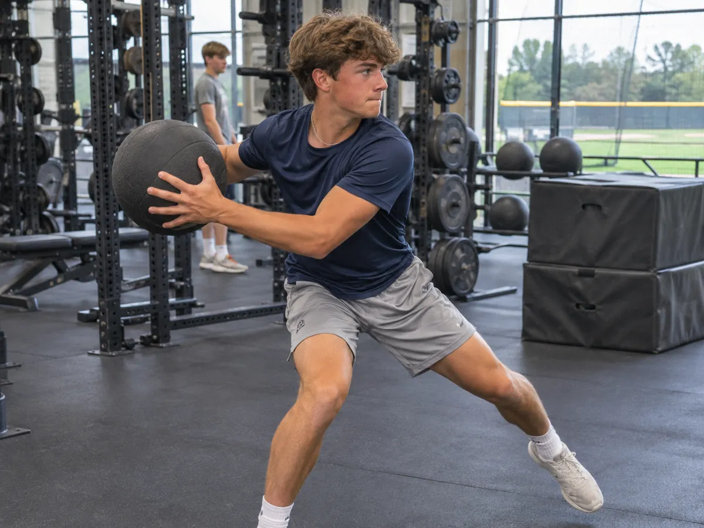
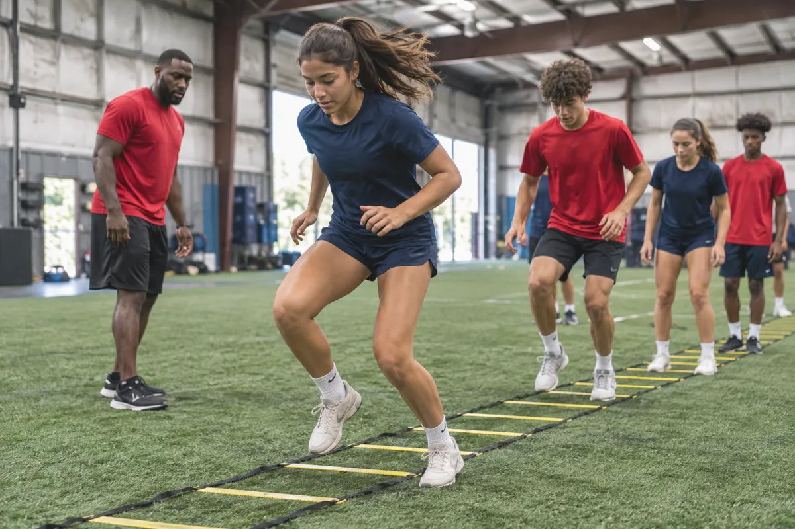

Home of
Natural Baseball Academy
Individual hitting lessons, age-group classes, and youth team training led by Natural Baseball coaches.
Learn about the Academy →
Spring Hill, Kansas
A 24,000-square-foot indoor baseball and athletic training facility built to give athletes a place to train, compete, grow, and belong.
The Facility
Mission Driven Sports gives Spring Hill and the surrounding area a year-round indoor home for baseball and athletic development. The space is laid out so hitters, pitchers, teams, and strength athletes can all train at the same time.

Programs
Home of
Individual hitting lessons, age-group classes, and youth team training led by Natural Baseball coaches.
Learn about the Academy →Programs that build the strength, mobility, and durability athletes need to play their best.
First-step quickness, footwork, and movement training on indoor turf.

Bring your team indoors for practice, skill work, and conditioning during the off-season and beyond.
Rentals
Teams, coaches, and individual athletes will be able to reserve tunnel and turf space. Rental options and booking details will be posted here as opening day gets closer.
Ask About RentalsProudly serving
Spring Hill / Olathe / Gardner / Paola / Louisburg / Edgerton / Johnson & Miami County
Visit
Our new building is taking shape. Follow along for opening dates, program registration, and rental availability.